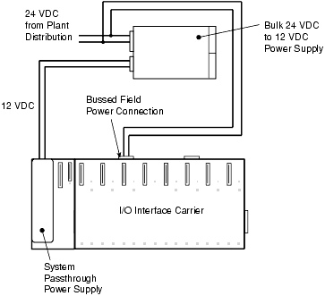
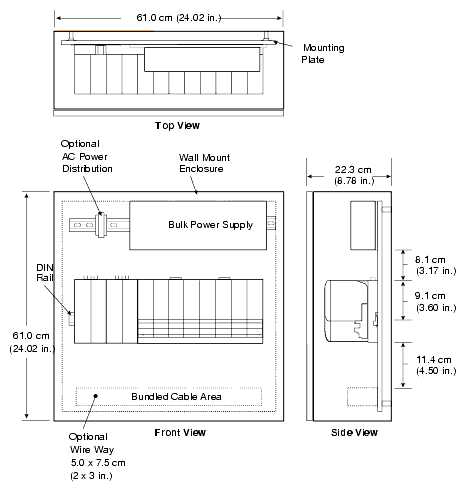
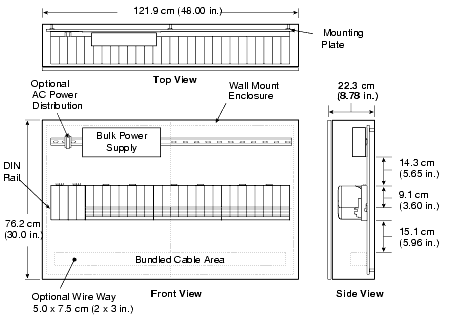
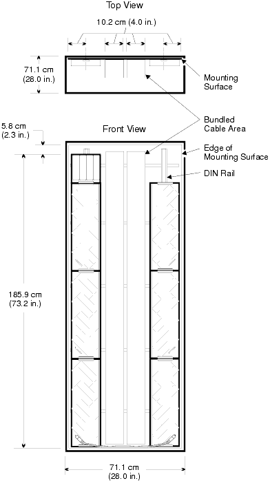

Source: DeltaV M-series Hardware Installation and Reference Manual, Emerson D800001X312, April 2021 — Appendices H & I
Bulk power supplies provide power to the DeltaV system and/or to field devices. System power is isolated from field power. There are three types of DeltaV Legacy Bulk Power Supplies:
| Type | Input | Output | Mounting | Status |
|---|---|---|---|---|
| Bulk AC to 24 VDC | 120/230 VAC | 24 VDC → field devices & System Power Supplies | Panel & DIN-rail | Available |
| Bulk AC to 12 VDC | 120/230 VAC | 12 VDC → System Power Supplies (DC/DC) | Panel & DIN-rail | Available |
| Bulk 24 VDC to 12 VDC | 24 VDC | 12 VDC → System Power Supplies (DC/DC) | Panel | Discontinued |
Pages 430–432, Tables H-1 & H-2
| Item | Specification |
|---|---|
| AC Input | 120/230 VAC nominal, 90–264 VAC range, 47–63 Hz, single-phase |
| Input Current | 3.6 A (12 VDC model) / 4.5 A (24 VDC model) |
| Output (60°C) | 12.3 VDC @ 12.0 A or 24.6 VDC @ 12.0 A |
| Output (70°C) | 12.3 VDC @ 9.0 A or 24.6 VDC @ 9.0 A |
| Inrush Current | 40/25 A max (hot/cold start) |
| Hold-up Time | 20 ms (90–264 VAC input) |
| Ripple & Noise | 1% PK-to-PK max (20 MHz BW) |
| Overvoltage Protection | 110%–120% |
| Power Factor | 0.98 at full rated load |
| Fuse | Internally fused, non-replaceable (internal fault only) |
| Alarm Relay | 30 VDC @ 2.0 A, 250 VAC @ 2.0 A |
| Redundancy OR-ing Diode | Integrated — no external diode required |
| Dimensions (H × W × D) | 13.5 × 24.0 × 10.6 cm (5.3 × 9.5 × 4.2 in) |
| Connector | Description |
|---|---|
| AC+ / AC− | AC line / neutral |
| Protective Ground | Earth ground |
| VOUT (×2) | DC voltage output (+) |
| RTN (×2) | DC voltage return (−) |
| ENA / ENA RTN | Output enable (factory-wired internally) |
| SHARE | Required for redundancy / load-sharing |
| RELAY+ / RELAY− | Alarm contacts (250 VAC, 30 VDC) |
Pages 432–434, Table H-3
| Item | Specification |
|---|---|
| AC Input | 120/230 VAC nominal, 90–264 VAC range, 47–63 Hz, single-phase |
| Output Rating | 24 VDC @ 12.5 A or 12 VDC @ 25 A |
| Output Power | 300 W at 60°C |
| Input Current | 5 A |
| Inrush Current | 100/40 A max (hot/cold start) |
| Hold-up Time | 20 ms (90–264 VAC input) |
| Ripple & Noise | 1% PK-to-PK max (20 MHz BW) |
| Overvoltage Protection | 125% (±5%) |
| Power Factor | 0.98 at full rated load |
| Fuse | 15 A, 250 VAC 3AB, non-replaceable (internal fault only) |
| Dimensions (H × W × D) | 12.70 × 39.37 × 6.35 cm (5 × 15.5 × 2.5 in) |
Page 434, Table H-4
| Item | Specification |
|---|---|
| DC Input Voltage | 24 VDC nominal (30 VDC max) |
| Output Rating | 12 VDC @ 25 A |
| Output Power | 300 W at 60°C, altitude < 914 m (3000 ft) |
| Power Requirement | 20 A |
| Inrush Current | 25 A/peak (cold start) |
| Hold-up Time | 20 ms after loss of nominal DC input |
| Fuse | GMA-15, 15 A/125 V, non-replaceable |
| Dimensions (H × D × W) | 12.70 × 30.50 × 6.35 cm (5 × 12 × 2.5 in) |
| Weight | 1.6 kg (3.5 lb) |
Pages 435–438, Appendix I
All enclosures must conform to applicable federal, state, and local codes and regulations. For EU installations, ensure compliance with applicable directives (e.g., 73/23/EEC Low Voltage Directive, 89/336/EEC EMC).
| Factor | Consideration |
|---|---|
| System Environment | Indoor/outdoor, corrosive atmosphere, washdown, hazardous area classification |
| Wire Management | Access through gland plates or conduited entries; plan areas for wiring |
| Heat Dissipation | Enclosure must dissipate generated heat and maintain ambient below rated temperature for all enclosed equipment |
Pages 439–441
To determine total heat load in an enclosure, sum the power dissipation of all enclosed components.
| Product | Power Dissipation |
|---|---|
| Controllers (MD Plus and MX) | 14 W |
| Remote Interface Unit | 6.0 W |
| Product | Power Dissipation |
|---|---|
| AI, 8-Channel, 4-20 mA | 10.1 W |
| AI, 8-Channel, 4-20 mA, HART | 10.1 W |
| AI, 8-Channel, 1-5 VDC | 10.1 W |
| AO, 8-Channel, 4-20 mA | 11.9 W |
| AO, 8-Channel, 4-20 mA, HART | 11.9 W |
| Product | Power Dissipation |
|---|---|
| DI, 8-Channel, 24 VDC, Isolated | 3.6 W |
| DI, 8-Channel, 24 VDC, Dry Contact | 2.9 W |
| DI, 8-Channel, 120 VAC, Isolated | 3.4 W |
| DI, 8-Channel, 120 VAC, Dry Contact | 3.4 W |
| DI, 8-Channel, 230 VAC, Isolated | 3.6 W |
| DI, 8-Channel, 230 VAC, Dry Contact | 3.6 W |
| DI, 32-Channel, 24 VDC, Dry Contact | 5.7 W |
| DO, 8-Channel, 120/230 VAC, Isolated | 6.1 W |
| DO, 8-Channel, 120/230 VAC, High Side | 6.1 W |
| DO, 8-Channel, 24 VDC, Isolated | 4.9 W |
| DO, 8-Channel, 24 VDC, High Side | 3.7 W + load-dependent* |
| DO, 32-Channel, 24 VDC, High-Side | 3.0 W + load-dependent* |
* DO 8-ch 24 VDC High-Side: max 25 W at 24 V. DO 32-ch: max 27 W at 24 V.
| Product | Power Dissipation |
|---|---|
| AS-Interface | 9.6 W |
| DeviceNet | 11.4 W |
| Fieldbus H1 Card | 10.2 W |
| Multifunction | 8.2 W |
| Profibus DP | 10.1 W |
| RTD, ohms | 2.7 W |
| Sequence of Events | 3.5 W |
| Serial Card, 2 Ports, RS232/RS485 | 5.1 W |
| Thermocouple, mV | 5.9 W |
| Product | Simplex | Redundant (per card) |
|---|---|---|
| Series 2 AI, 4-20 mA with HART | 8.4 W | 9.1 W |
| Series 2 AI, 16-channel, 4-20 mA HART | 12.7 W | — |
| Series 2 AO, 4-20 mA with HART | 10.2 W | 10.2 W |
| Series 2 AS-Interface | 9.6 W | — |
| Series 2 DeviceNet | 11.4 W | — |
| Series 2 DI, 8-Channel, 24 VDC | 3.7 W | 3.7 W |
| Series 2 DI, 32-Channel, 24 VDC | 5.7 W | — |
| Series 2 DO, 8-Channel, 24 VDC High-Side | 3.7 W | 3.7 W |
| Series 2 DO, 32-Channel, 24 VDC High-Side | 3.0 W + load* | — |
| Series 2 H1 | 6.1 W | 6.1 W |
| Series 2 Isolated Input | 5.9 W | — |
| Series 2 Profibus | 10.1 W | — |
| Series 2 RTD, ohms | 2.7 W | — |
| Series 2 Thermocouple | 3.5 W | — |
| Series 2 Serial | 5.1 W | 5.1 W |
* Series 2 DO 32-ch: max 27 W at 24 V load-dependent power dissipation.
| Product | Power Dissipation |
|---|---|
| I.S. AI, 8-Channel, 4-20 mA, HART | 9.8 W |
| I.S. AO, 8-Channel, 4-20 mA (and HART) | 11.3 W |
| I.S. DI, 16-Channel | 7.6 W |
| I.S. DO, 4-Channel | 10.1 W |
| Power Supply | Power Dissipation |
|---|---|
| Legacy DIN Rail-Mounted Bulk AC to 12 VDC | 12 W |
| Legacy DIN Rail-Mounted Bulk AC to 24 VDC | 12 W |
| Legacy Panel-Mounted Bulk AC to 12 VDC | 22 W |
| Legacy Panel-Mounted Bulk AC to 24 VDC | 22 W |
| Legacy Bulk 24 VDC to 12 VDC | 14.5 W |
| System Power Supply (AC/DC) | 4.4 W |
| System Power Supply (Dual DC/DC) — 12 VDC in | 11.4 W |
| System Power Supply (Dual DC/DC) — 24 VDC in | 26.4 W |
| Product | Power Dissipation |
|---|---|
| Simplex Logic Solver | 16.0 W |
| Redundant Logic Solvers | 24.0 W |
| SISNet Repeaters (per unit) | 9.6 W |
| Auxiliary Relay Modules (24 VDC) | 4.65 W |
| Auxiliary Relay Diode Module | 2.25 W |
| Fieldbus H1 Carrier | 5.2 W |
| Media Converter | 5.1 W |
| Single Port Fiber Switch | 8.2 W |
| Four Port Fiber Switch | 8.4 W |
| I.S. LocalBus Isolator | 1.2 W |
| I.S. System Power Supply | 1.5 W |
Pages 441–442
| Qty | Component | Power |
|---|---|---|
| 1 | Controller (MD Plus/MX) | 14 W |
| 1 | AI, 8-ch, 4-20 mA HART | 10.1 W |
| 1 | AO, 8-ch, 4-20 mA | 11.9 W |
| 1 | DI, 8-ch, 24 VDC isolated | 3.6 W |
| 1 | DO, 8-ch, 24 VDC high-side (8 solenoids) | 3.7 + 16.4 = 20.1 W |
| 2 | DO, 8-ch, 120/230 VAC isolated | 12.2 W |
| 2 | DI, 8-ch, 120 VAC isolated | 6.8 W |
| 1 | System Power Supply (AC/DC) | 4.4 W |
| 1 | Bulk AC to 24 VDC Supply | 22 W |
| Total | 105.1 W | |
If ambient temperature is 35°C and components are rated for 60°C, the enclosure temperature rise must be less than 25°C with 105.1 W of heat dissipation. If the surface area is insufficient, use fans or blowers.
Cabinet manufacturers recommend a safety margin of 25%.




Q1: What is the difference between the DIN rail-mounted and panel-mounted legacy bulk power supplies in terms of load sharing?
A: The DIN rail-mounted supply supports both redundancy and load sharing. The panel-mounted supply can only be used for redundancy — it cannot support load sharing.
Q2: Why does the DO 8-channel 24 VDC High-Side card have a variable power dissipation?
A: Its power dissipation is base (3.7 W) plus load-dependent power that varies with the number and type of field devices (solenoids, etc.) being driven, up to 25 W maximum at 24 V.
Q3: If a legacy bulk power supply has an integrated OR-ing diode, what additional component is needed for redundancy?
A: None — the integrated OR-ing diode is sufficient. Connect the SHARE terminals between units. External OR-ing diodes are only needed for supplies without integrated diodes (e.g., panel-mounted).